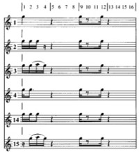

<!doctype html>
<html>
	<head>
		<meta charset="utf-8">
		<meta name="viewport" content="width=device-width, initial-scale=1.0, maximum-scale=1.0, user-scalable=no">

		<title>African Polyphony &amp Polyrhythm</title>

		<link rel="stylesheet" href="css/reveal.css">
		<link rel="stylesheet" href="css/theme/solarized.css">

		<!-- Theme used for syntax highlighting of code -->
		<link rel="stylesheet" href="lib/css/zenburn.css">

		<!-- Printing and PDF exports -->
		<script>
			var link = document.createElement( 'link' );
			link.rel = 'stylesheet';
			link.type = 'text/css';
			link.href = window.location.search.match( /print-pdf/gi ) ? 'css/print/pdf.css' : 'css/print/paper.css';
			document.getElementsByTagName( 'head' )[0].appendChild( link );
		</script>
	</head>
	<body>
		<div class="reveal">
			<div class="slides">
                <section data-markdown>
                    <script type="text/template">
                        ## African Polyphony & Polyrhythm

                        

                        [@ctford](https://twitter.com/ctford)/[ThoughtWorks](https://thoughtworks.com)
                    </script>
                </section>

                <section data-markdown>
                    <script type="text/template">
                        ## Central African Republic

                        > "Groups of percussion instruments playing tightly interlocked rhythms..."
                        >
                        > "Orchestras of up to twenty wind instruments in which each musician would play
                        > only a single note..."
                        >
                        > "Choirs singing incredibly complex and yet perfectly coherent contrapuntal music..."

                        page xix
                    </script>
                </section>

                <section data-markdown>
                    <script type="text/template">
                        ## Horn Orchestra

                        

                        page 123
                    </script>
                </section>

                <section data-markdown>
                    <script type="text/template">
                        ## Simha Arom

                        > "I was conditioned by a cultural background too narrow to allow easy comprehension
                        > of anything as different and as disconcerting (in the etymological sense) as
                        > African music."

                        page xix
                    </script>
                </section>

                <section data-markdown>
                    <script type="text/template">
                        ## Playback Recording

                         

                        > "I had the idea of adapting the playback, or
                        > re-recording technique, which is widely used in Western popular music, to field
                        > conditions."

                        page xx, 125, 126
                    </script>
                </section>

                <section data-markdown>
                    <script type="text/template">
                        ## Modeling

                        _realisation → model → realisation_

                        ***

                        > "If the realisations on either side of the model have the same structural features,
                        > we will have proof of the coherence of the system."

                        page 436
                    </script>
                </section>

                <section data-markdown>
                    <script type="text/template">
                        ## Modeling Music

                        _performance → score → performance_

                        ***

                        

                        page 314
                    </script>
                </section>

                <section data-markdown>
                    <script type="text/template">
                        ## Modeling is compression


                        
                        → jpeg →
                        

                        [Wikipedia](https://en.wikipedia.org/wiki/Lossy_compression) (public domain)
                    </script>
                </section>

                <section data-markdown>
                    <script type="text/template">
                        ## Bartók

                        

                        [Wikipedia](https://en.wikipedia.org/wiki/B%C3%A9la_Bart%C3%B3k) (public domain)
                    </script>
                </section>

                <section data-markdown>
                    <script type="text/template">
                        ## Bartók
                        > "Bartók frequently used the sign 'b/2' to indicate that a tone in a melody
                        > was between B and B flat."

                        > "But when the notation was rechecked, it turned
                        > out that the pitch of the b/2 tone was never the same."

                        László Lajtha, quoted page 155
                    </script>
                </section>

                <section data-markdown>
                    <script type="text/template">
                        ## Ostinato with variations

                        

                        * A horn plays a single pitch.
                        * Each musician has their own part, which they repeat.
                        * Variations are introduced over time.

                        page 343
                    </script>
                </section>

                <section data-markdown>
                    <script type="text/template">
                        ## Prior art

                        * Compiling COBOL to machine instructions.
                        * Compiling ES6 to ES5.
                        * Compiling Java, Scala and Clojure to JVM bytecode.
                        * Compiling Overtone to SCLang.
                    </script>
                </section>

                <section data-markdown>
                    <script type="text/template">
                        ## Separating notation from representation

                        > "The language to represent the data should be a simple, data-only format such as
                        > JSON or YAML, and programmatic modification of this data should be done in a real
                        > programming language, where there are well-understood semantics, as well as good tooling."

                        Brendan Burns, Brian Grant, David Oppenheimer, Eric Brewer, and John Wilkes, [Borg, Omega, and Kubernetes](http://queue.acm.org/detail.cfm?id=2898444)
                    </script>
                </section>

                <section data-markdown>
                    <script type="text/template">
                        ## Pushing bias down a level

                        * Algorithms encode bias.
                        * The enterprise is a Western conceit.
                        * The people doing it are Western.
                    </script>
                </section>

                <section data-markdown>
                    <script type="text/template">
                        ## Conclusion

                        <del>performance → score → performance</del>

                        performance → notation → representation → performance

                        ***

                        * There can be one representation for many notations.
                        * Notation can be optimised for expression, because it's not directly executed.
                        * Representations can be optimised for interoperability, because it's not directly written.
                    </script>
                </section>

                <section data-markdown>
                    <script type="text/template">
                        As programmers, we have sophisticated mechanisms for abstraction and composition, which lets achieve open world languages with mutual intelligibility.
                    </script>
                </section>


			</div>
		</div>

		<script src="lib/js/head.min.js"></script>
		<script src="js/reveal.js"></script>

		<script>
			// More info https://github.com/hakimel/reveal.js#configuration
			Reveal.initialize({
				history: true,

				// More info https://github.com/hakimel/reveal.js#dependencies
				dependencies: [
					{ src: 'plugin/markdown/marked.js' },
					{ src: 'plugin/markdown/markdown.js' },
					{ src: 'plugin/notes/notes.js', async: true },
					{ src: 'plugin/highlight/highlight.js', async: true, callback: function() { hljs.initHighlightingOnLoad(); } }
				]
			});
		</script>
	</body>
</html>

